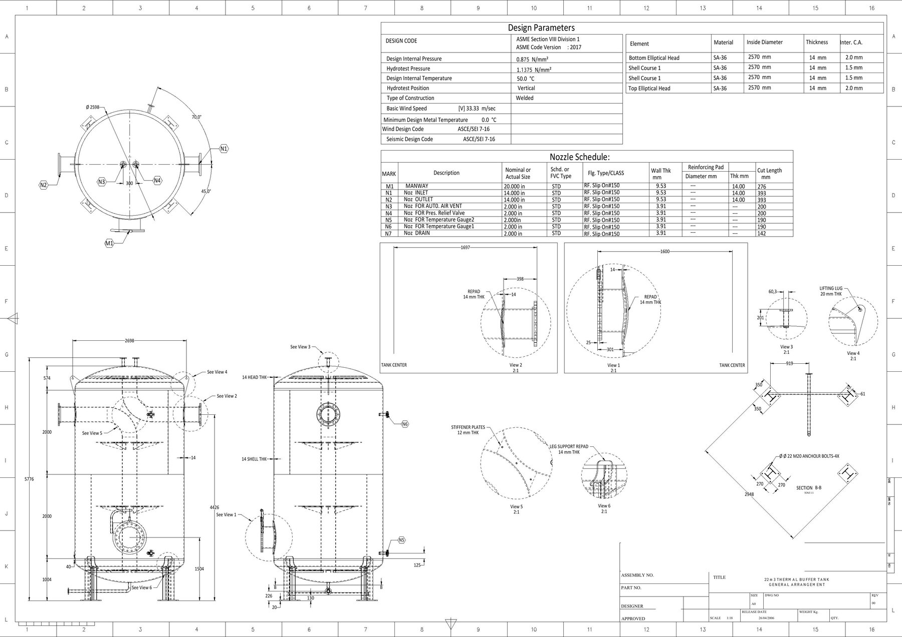
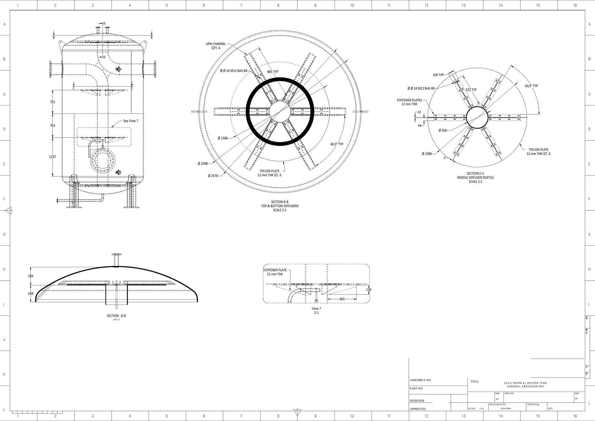
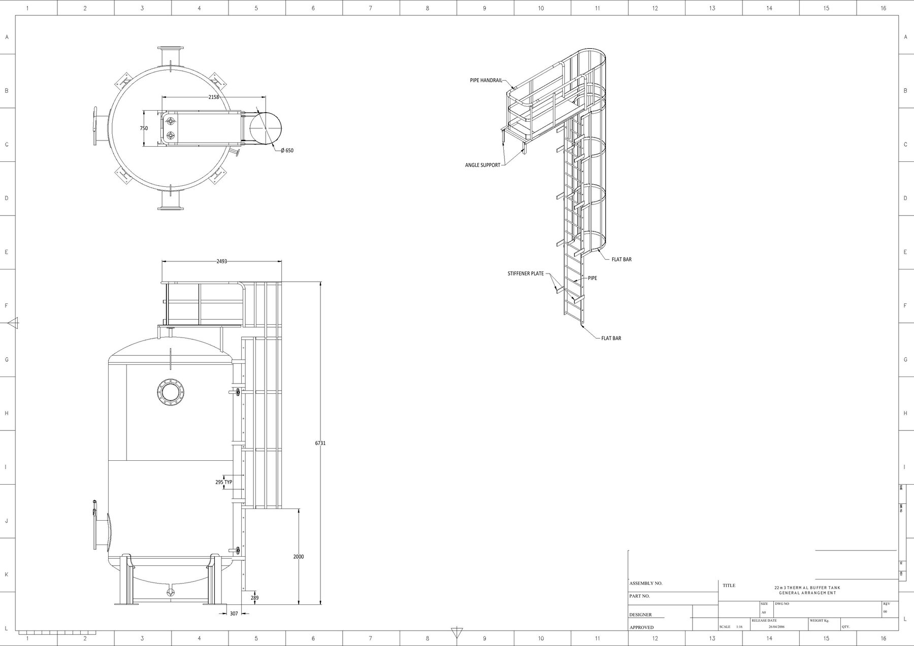
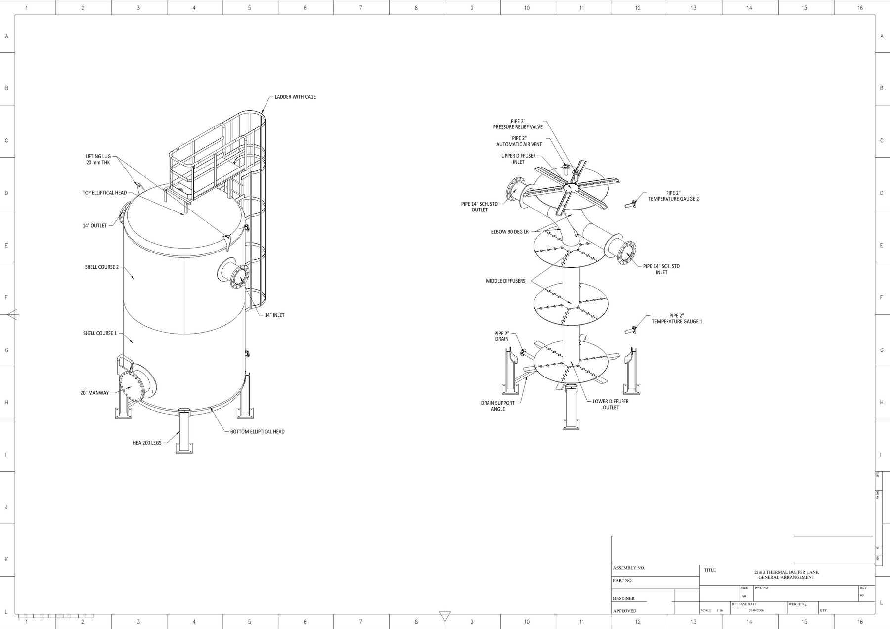

22 m³ Pressure Vessel Modeling and Shop Drawings
Detailed three-dimensional modeling and fabrication documentation of a welded thermal buffer tank, including the vessel shell, internal flow components, nozzle arrangement, supports, platform, and access ladder.

Project overview
This project covered the detailed modeling and shop-drawing development of a 22 m³ welded pressure vessel used as a thermal buffer tank. The documentation coordinates the cylindrical shell, elliptical heads, inlet and outlet connections, manway, drain, instrumentation and relief nozzles, internal diffusers and baffles, lifting lugs, support legs, top platform, and access ladder.
Modeling and drawing scope
- Develop the complete vessel geometry, shell courses, elliptical heads, support legs, and lifting points.
- Model the inlet and outlet diffusers, internal baffles, central support tube, and associated stiffening components.
- Coordinate the manway and nozzle orientations around the vessel circumference.
- Prepare the nozzle schedule with sizes, flange classes, wall thicknesses, reinforcing pads, and cut lengths.
- Document general dimensions, local sections, shell and head details, and fabrication interfaces.
- Develop the top platform, safety railing, cage ladder, and intermediate access-platform arrangement.
- Compile the vessel design and fabrication information into four coordinated A0 shop-drawing sheets.
Design documentation
The drawing package records the vessel design basis under ASME Section VIII Division 1 and includes the internal design and hydrotest pressures, design temperature, material and thickness schedule, wind and seismic design references, nozzle schedule, and welded-construction details.
Engineering outcome
The completed package connects the overall vessel arrangement with the fabrication-level information required to coordinate shell construction, internal components, process connections, supports, and safe maintenance access. Exploded and sectional views make the internal arrangement reviewable without separating it from the complete tank assembly.
Project gallery



